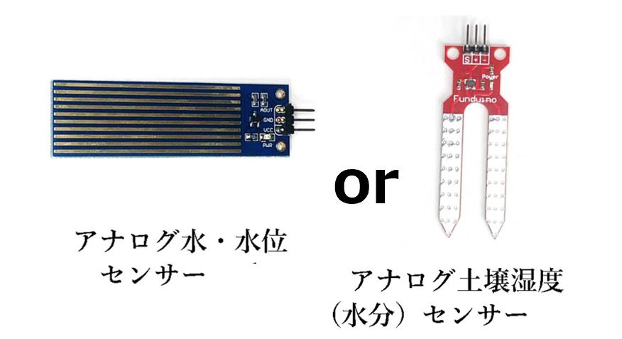
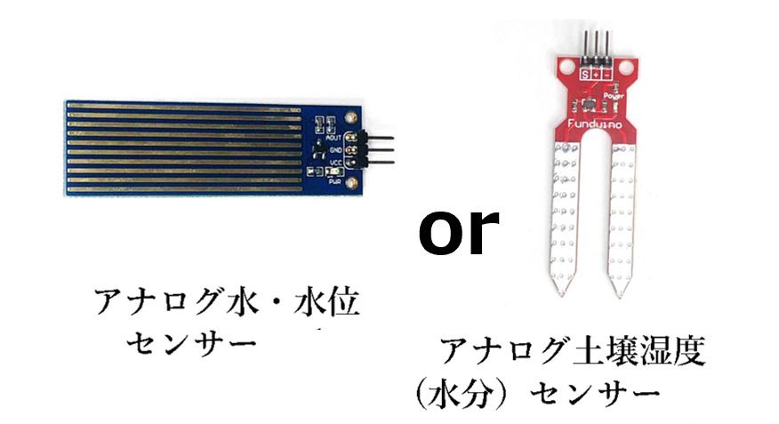

8.1.4 アナログセンサーの使い方
 

- アナログセンサーを利用する時には ADC（アナログデジタルコンバーター）を利用して値を取得して使います。
- 応用センサーキットでは半固定抵抗（つまみの代わり）を利用したアナログ値の変更の確認をするサンプルと、水位センサー・土壌湿度センサーがキットに含まれています。
回路図とプログラムサンプル
アナログボリュームの回路図（半固定抵抗利用）

- アナログセンサーの利用は ADS1115 を使います。回路図にあるつまみは半固定抵抗 10KΩ を使用します。
動作を確認するためのサンプルコードは CHIRIMENパネル から入手できます。
ブラウザでサンプルコードの中を確認したい場合は コードを確認する から確認出来ます。
- アナログボリューム ＞ ID：ads1x15 タイトル：電圧測定（ADC）
【備考】
- サンプルコードはアナログの値を電力に変換して表示させています。
- 電力変化量から必要な値を求められるようにするのは、プログラムでの計算が必要です。
- 水位センサー／土壌センサーを利用する前にアナログボリュームで動作確認をするようにしてください。
水位センサーの回路図

- 水位センサ、土壌湿度センサもアナログセンサーです。ADS1115 を併用して使います。
動作を確認するためのサンプルコードは CHIRIMENパネル から入手できます。
ブラウザでサンプルコードの中を確認したい場合は コードを確認する から確認出来ます。
- アナログ水位センサー／アナログ土壌センサー ＞ ID：ads1x15 タイトル：電圧測定（ADC）
【備考】
- 動作を確認するためには実際に水につけて確認するか、濡れタオルで覆う事で確認が出来ます。